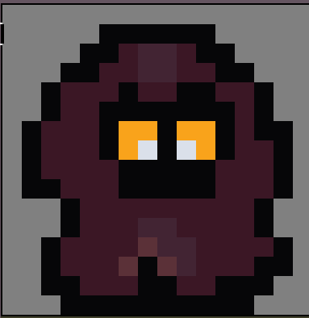
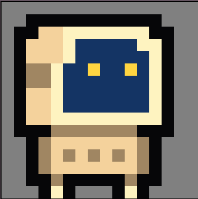
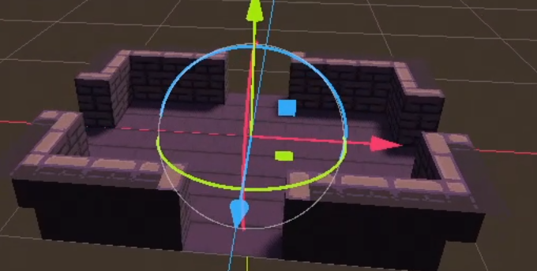

In the first week, we learned godot to get familiar with the game engine, and worked on the basics of what our game should have: player movement, basic sprites for character and enemies (drawn via Aseprite), collisions. We weren't sure how to create our 3D environment from tiles (our goal was to have a pixel-art look to our game), whether to use Blender or other software, but we eventually settled on a software called Crocotile3D that we used to construct 3D blocks for our game imported from 2D tilemaps.
|

|

|
|

|
Then, we moved onto projectiles (creating the projectile and adding shaders to it) and getting player shooting to work (aiming is aligned with mouse movement). We wanted to make projectile collision feel more immersive, so we added a shader that animates a hitflash on our enemy when its hit. This turned out to be a much greater challenge than we expected, as we had a 2D sprite for our character, but we're rendering in 3D. We had to orient the shader on our character sprite face the camera. Therefore, we had to run through all the vertices in our model and construct a custom model-view matrix that ensures the new shader always faces the camera.
Our current goals are to create more shaders for the camera to be able to add cool effects and lighting. We also want to work on a particle system, design more 3D scene models to add more immersion, shadows into the environment. Then, we're going to flesh out the map and rooms; after, we finish the basic enemy behavior by adding enemy aggression and shooting, perhaps working with Finate State Machines.
Our sprites and environment are just bare bones currently, so we plan on drawing more updated textures to reflect the theme of our game. We still need to flesh out our ideas for incorporating lens (lens diagram) concepts into our game. We're finding it would be more fun if each playthrough felt different, so we're considering adding procedural generation for the terrain. Learning Godot has taken a considerable amount of time, and the hardest part of our project so far has been working with the game engine and understanding how everything interacts with each other. Now that we are more comfortable and have a good foundation we are hoping to have an easier time approaching and implementing the more advanced aspects of our project.